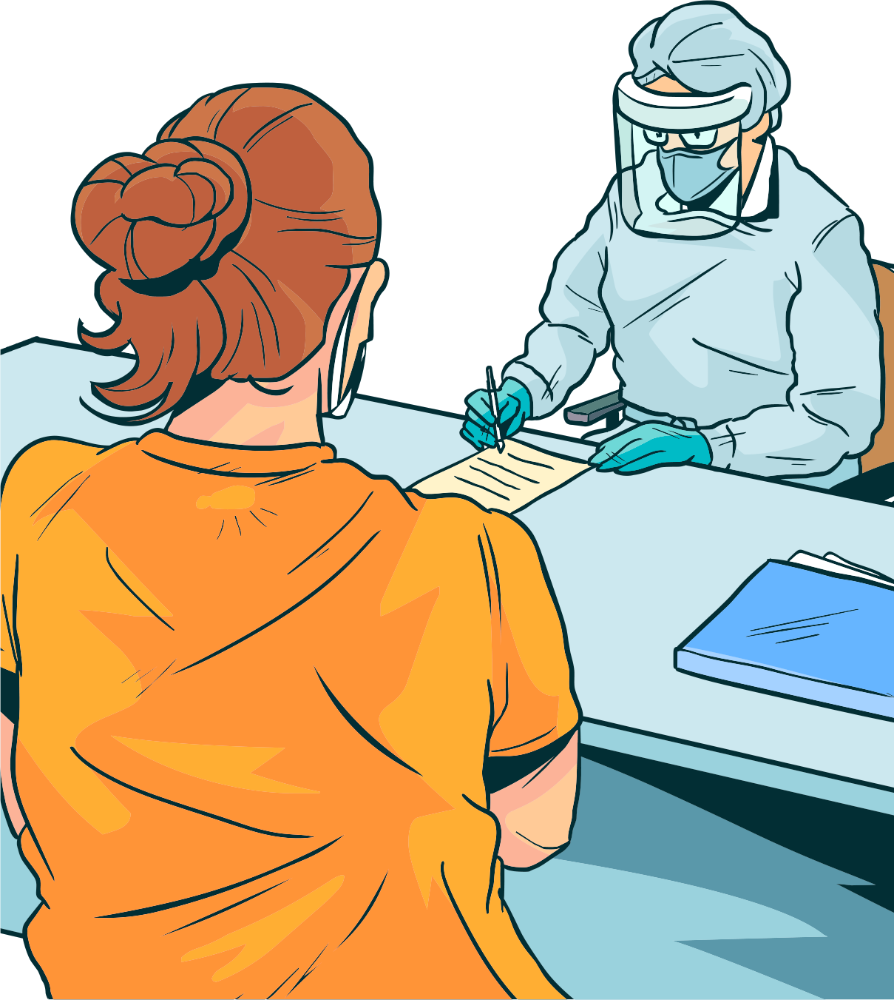

Existem outros Equipamentos de Proteção Individual (EPIs), como óculos de proteção, avental descartável em TNT e touca descartável em TNT, que se destinam especificamente aos profissionais de saúde, considerando que seu contato com pacientes com sintomas suspeitos é mais próximo.
No entanto, a depender da situação e de acordo com a orientação da equipe de saúde, os profissionais de segurança, manutenção e limpeza também deverão fazer uso. Tão importante quanto o uso de EPIs é a higienização correta das mãos e a aplicação da etiqueta respiratória, inclusive antes e depois do uso dos EPIs.